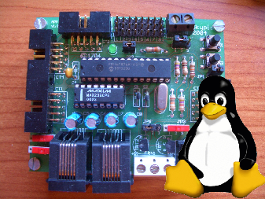

|
Taller de Robótica Básico - Skybot v1.4. - SESION 3 - Software para Linux |
|
 |
A continuación instalaremos las herramienta que vamo a utilizar desde Linux. Todo el software es libre, por lo que se puede usar, copiar, distribuir, modificar y redistribuir las modificaciones.
Para editar los ficheros en C se puede emplear cualquier editor: Emacs, Vim, Kate, Gedit... Si nunca has utilizado ninguno de ellos no tienes claro cual usar, nosotros te aconsejamos el Anjuta, que es un entorno de programación.
Está disponible en cualquier distribución. Si usas Debian o una derivada (Ubuntu, Knoppix,...) lo puedes instalar muy fácilmente con:
apt-get install anjuta
O bien utilizando el gestor gráfico de paquetes synaptic.
Aquí puedes ver un pantallazo de mi Anjuta en acción. Yo tengo la versión 1.2.2, que es la que viene con Debian/Sarge. Si te gusta la configuración que tengo, la puedes instalar de esta manera:
Descargar el fichero anjuta-cfg.tgz.
Descomprimirlo en nuestro Home: $ tar vzxf anjuta-cfg.tgz
Instalación
Las GPUTILS son necesarias para que funcione el compilador de C. Incluyen un ensamblador, desensamblador y un enlazador (linker).
Está disponible en Debian: apt-get install gptutils
Otras distribuciones: en la página de descargas están disponibles los paquetes rpm
La versión que yo tengo es la 0.13.0, que viene en Debian/Sarge.
Pruebas:
Para probar que está correctamente instalado:
Bajar el paquete gputils-test.tgz. Contiene un ejemplo muy sencillo en ensamblador y un fichero Makefile
Descomprimir:
|
$ tar vzxf gputils-test.tgz gputils-test/ gputils-test/Makefile gputils-test/ledon.asm |
Entrar en el directorio y ejecutar make:
|
$ cd gputils-test $ make gpasm -w 2 -a inhx8m ledon.asm |
Esto habrá generado el fichero .hex con el código máquina, junto con otros ficheros. Si es así, las gptuils funcionan correctamente.
|
$ ls ledon.asm ledon.cod ledon.hex ledon.lst Makefile |
El compilador que vamos a emplear es el SDCC. Todavía es una versión alfa para los microcontroladores PIC por lo que no está implementada todas las funcionalidades de uno comercial, sin embargo está lo suficiente maduro como para hacer los ejemplos del taller.
La versión que emplearemos es la 2.6.0.
Instalación
Descargar la versión 2.6.0 desde la página de download. El fichero a bajar es sdcc-2.6.0-i386-unknown-linux2.2.tar.gz.
Descomprimir:
|
$ tar vzxf sdcc-2.6.0-i386-unknown-linux2.2.tar.gz |
Entrar en el directorio y copiar todos los fichero en /usr/local, como root
|
# cd sdcc # cp -r * /usr/local |
Pruebas
Desde nuestro home, ejecutar los siguiente:
|
$ sdcc -v SDCC : mcs51/gbz80/z80/avr/ds390/pic16/pic14/TININative/xa51/ds400/hc08 2.6.0 #4309 (Sep 28 2006) (UNIX) |
Fijarse que pone 2.6.0
Vamos a compilar un programa de ejemplo. Bajar el paquete sdcc_hola_mundo.tgz.
Descomprimirlo y entrar en el directorio:
|
$ tar vzxf sdcc_hola_mundo.tgz $ cd sdcc_hola_mundo |
Ejecutar make:
|
$ make Compilando ...
|
Se nos habrán generado varios ficheros, entre ellos el que tiene el código máquina: ledon.hex
|
$ ls ledon.asm ledon.c ledon.cod ledon.d ledon.hex ledon.lst ledon.o ledon.p Makefile |
Para grabar los programas en el PIC utilizaremos el cargador de Shane Tolmie.
Instalación
Bajar el paquete cargador.tgz.
Descomprimirlo y entrar en el directorio
|
$ tar vzxf cargador.tgz $ cd cargador |
Dar permisos de lectura y escritura al puerto serie que se vaya a emplear. Lo normal es utilizar el /dev/ttyS0 (que es el equivalente al COM1 de Windows). Esta operación hay que hacerla como root.
|
# chmod a+rw /dev/ttyS0 |
Editar el script skybot-down y poner el dispositivo serie que se vaya a emplear. Por defecto vienen con el /dev/ttyS0. Este script llama al cargador con los parámetro adecuados. Este es el aspecto que tiene:
|
$ cat skybot-down #!/bin/sh picdl -S38400 -P/dev/ttyS0 $1 |
Copiar los ficheros al directorio /usr/local/bin, como root:
|
# cp * /usr/local/bin |
Ya tenemos el software listo para trabajar!!!!
Para mover el robot y hacer pruebas de los sensores utilizaremos el programa Skybot-test.
También utilizaremos el minicom, que es un terminal de comunicaciones. Está disponible en todas las distribuciones. Para instalarlo en Debian sólo tendremos que hacer: apt-get install minicom. Para configurarlo hacer lo siguiente:
Ejecutar minicom -s como root
Seleccionar la opción de “configuración de la puerta serial”
Seleccionar el dispositivo serie donde conectaremos el skybot, pulsando la A
Dar a la opción E
Establecer una velocidad de 9600 baudios (Opción E)
Salir del menú pulsando enter. La configuración establecidad debe ser 9600 N81
Grabar la configuración en la opcion “Salvar configuracion como dfl...”
Salir
{kind=link}